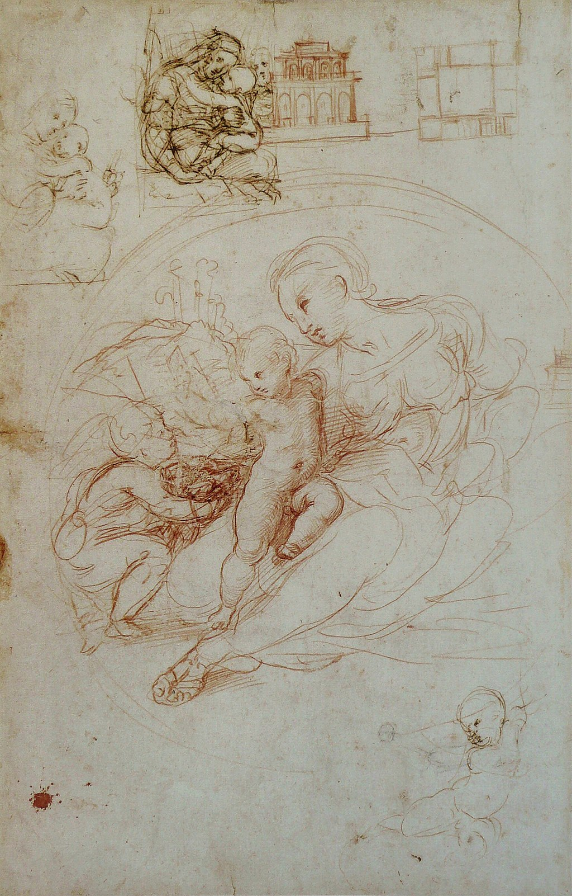

<head>
<meta charset="UTF-8" />
<meta name="keywords" content="drawing, painting" />
<meta name="description" content="drawings by Sunjy" />
<title>Sunjy</title>
<link rel="shortcut icon" type="image/x-icon" href="../../mImages/mCommon/favicon.ico" media="screen" />
<link rel="stylesheet" type="text/css" href="../../mCsses/mCommon/mCssA.css" />
<link rel="stylesheet" type="text/css" href="../../mCsses/mCommon/mCssB.css" />
<link rel="stylesheet" type="text/css" href="../../mCsses/mCommon/mCssC.css" />
<link rel="stylesheet" type="text/css" href="../../mCsses/mCommon/mCssD.css" />
<link rel="stylesheet" type="text/css" href="../../mCsses/mContent/mCssA.css" />
<link rel="stylesheet" type="text/css" href="../../mCsses/mContent/mCssB.css" />
<link rel="stylesheet" type="text/css" href="../../mCsses/mContent/mCssC.css" />
<link rel="stylesheet" type="text/css" href="../../mCsses/mContent/mCssD.css" />
</head>
<script type="text/javascript" src="../../mScripts/mContent/mContentAA.js" /></script>
<script type="text/javascript" src="../../mScripts/mContent/mContentAB.js" /></script>
<script type="text/javascript" src="../../mScripts/mContent/mContentAC.js" /></script>
<script type="text/javascript" src="../../mScripts/mContent/mContentAD.js" /></script>
<script type="text/javascript"></script> 
<script type="text/javascript">
document.write('<div class="mImgAbsolute"></div>');
/*
document.write('<p class="mFontSizeBColor" />From a white paper...</p>');
document.write('<table class="center"><tr><td>');
document.write('');
document.write('</td></tr></table>');
*/
</script>


<script type="text/javascript">
document.write('<p class="mFontSizeBColor" />Raphael’s study of what became the Alba Madonna, with other sketches</p>');
document.write('<p class="mFontSizeSColor" />By Raphael. The painting is the first of a series of full-length figure compositions that portray the apocryphal encounter between the Child Jesus and the boy Baptist.<br><br>In Christian traditions, the boy Baptist is supposed to have recognized Christ as the Redeemer even in their childhood, Raphael makes this clear by letting Christ take the cross from John.<br><br>Leonardo’s influence on Raphael is evident in this composition by the arrangement of the figures into a pyramidal composition.<br><br>This pyramidal composition is something that Raphael would have studied in Leonardo’s famous drawing of “The Virgin and Child with St. Anne”, which was in another church in Florence, where Raphael studied for four years.</p>');
document.write('<table class="center" /><tr><td>');
document.write('<br>In Christian traditions, the boy Baptist is supposed to have recognized Christ as the Redeemer even in their childhood, Raphael makes this clear by letting Christ take the cross from John.<br><br>Leonardo’s influence on Raphael is evident in this composition by the arrangement of the figures into a pyramidal composition.<br><br>This pyramidal composition is something that Raphael would have studied in Leonardo’s famous drawing of “The Virgin and Child with St. Anne”, which was in another church in Florence, where Raphael studied for four years." />');
document.write('</td></tr></table>');
</script>


